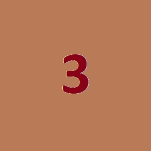

Text 1
The quick brown fox jumped over the lazy dog. The quick brown fox jumped over the lazy dog. The quick brown fox jumped over the lazy dog. The quick brown fox jumped over the lazy dog. The quick brown fox jumped over the lazy dog. The quick brown fox jumped over the lazy dog. The quick brown fox jumped over the lazy dog. The quick brown fox jumped over the lazy dog.
Text 2
The quick brown fox jumped over the lazy dog. The quick brown fox jumped over the lazy dog. The quick brown fox jumped over the lazy dog. The quick brown fox jumped over the lazy dog. The quick brown fox jumped over the lazy dog. The quick brown fox jumped over the lazy dog. The quick brown fox jumped over the lazy dog. The quick brown fox jumped over the lazy dog. The quick brown fox jumped over the lazy dog. The quick brown fox jumped over the lazy dog. The quick brown fox jumped over the lazy dog. The quick brown fox jumped over the lazy dog. The quick brown fox jumped over the lazy dog. The quick brown fox jumped over the lazy dog. The quick brown fox jumped over the lazy dog. The quick brown fox jumped over the lazy dog. The quick brown fox jumped over the lazy dog. The quick brown fox jumped over the lazy dog. The quick brown fox jumped over the lazy dog. The quick brown fox jumped over the lazy dog. The quick brown fox jumped over the lazy dog.

Text 3
The quick brown fox jumped over the lazy dog. The quick brown fox jumped over the lazy dog. The quick brown fox jumped over the lazy dog. The quick brown fox jumped over the lazy dog. The quick brown fox jumped over the lazy dog. The quick brown fox jumped over the lazy dog. The quick brown fox jumped over the lazy dog. The quick brown fox jumped over the lazy dog. The quick brown fox jumped over the lazy dog. The quick brown fox jumped over the lazy dog. The quick brown fox jumped over the lazy dog.